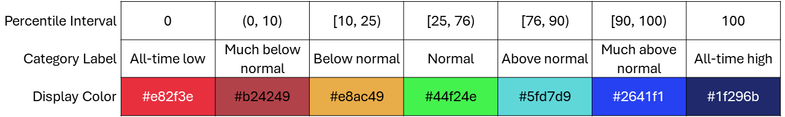
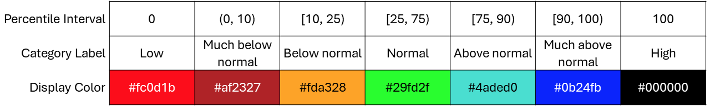
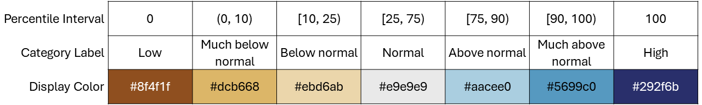

Calculations Quick-Reference¶
A quick-reference guide to the common types of calculations performed within the hyswap package is provided below. See the Glossary section for definitions of specific terms. Also, refer to the API Reference section for more detailed documentation on specific functions within hyswap.
Assumptions and Caveats¶
The hyswap package functions assume that provided streamflow data has been quality controlled. No checks on incorrect, missing, or negative values are performed. Users should perform any necessary QA/QC checks on the data prior to using hyswap functions. Additionally, hyswap does not detect artifacts or shifts in streamflow data that potentially violate statistical methods, such as:
- negative flows associated with tidal-influenced locations or other phenomena
- regulated flows or transitions from regulated to unregulated flows (or vice versa)
- major watershed changes
Streamflow Percentiles¶
Streamflow percentiles are a core calculation of hyswap that are used to determine streamflow conditions (e.g., normal, high-flow, low-flow, drought, flood). Percentiles can be computed from daily streamflow (discharge), n-day average streamflow, or runoff. Multiple types of percentiles are used in hydrologic analysis and vary in what subset of observations are used in calculating a given set of percentiles. Percentiles are closely related to exceedance probabilities used to construct flow duration curves (see below). The hyswap package provides support for the following types of streamflow percentiles:
Percentile Type |
Description |
|---|---|
Variable (Day of Year) |
Computed using flow observations for that day from all years of record resulting in percentile classes/thresholds that change seasonally and correspond to a specific day of year. Variable percentiles are useful for characterizing flow conditions relative to the typical flow on a given day of the year. The variable (day of year) percentile is the standard percentile that is displayed in USGS water data services. |
Fixed (All days) |
Computed using all flow observations in the period of record. Records from all days of the year are combined resulting in percentile classes/thresholds that do not change seasonally. Fixed percentiles are useful for characterizing flow conditions relative to non-moving phenomena such as flood stages or dam intakes. |
Variable Moving Window (Day of Year) |
Computed using flow observations for that day plus or minus n number of days (e.g., 7, 14, or 30) from all years of record resulting in percentile classes/thresholds that change seasonally and correspond to a specific day of year. Variable moving window percentiles reduce the fluctuation in percentile classes from day-to-day, especially for sites with short observation records. Variable moving window is useful for characterizing flow conditions relative to typical flow expected on a given day of the year. |
By default, hyswap computes streamflow percentiles using the unbiased Weibull plotting position formula, \(i/(n+1)\), where i is the rank of an observation and n is the sample size (Weibull, 1939). The Weibull formula has been the standard approach used by hydrologists for generating flow-duration and flood-frequency curves (Helsel and others, 2020). Weibull plotting position does not set values to either 0 or 100, recognizing the existence of a non-zero probablity of exceeding the maximum or minimum observed value. For further discussion of plotting positions refer to (Helsel and others, 2020).
hyswap uses the numpy.percentile() implementation of the Weibull method (Type 6) for calculating percentiles. Additional methods of computing percentiles that exist in the numpy.percentile() function can be used in hyswap. Users can refer to the numpy function documentation for additional details.
Other default settings for percentile calculations are that NA values are dropped, a minimum of 10 years of record length is available for a given day of year, and percentile levels of 0, 5, 10, 25, 50, 75, 90, 95, 100 are calculated.
hyswap uses the numpy.percentile() implementation of the Weibull method (Type 6) for calculating percentiles
Exceedance Probabilities and Flow-Duration Curves¶
In some hydrological studies, particularly those related to floods, a variation of the percentile known as the “percent exceedance” is used. It can be obtained by subtracting the percentile scale value from 100 percent. For example, a discharge at the 75th percentile is the same as a discharge at the 25th percent exceedance (100-75=25). By default, hyswap computes streamflow exceedance probabilities using the unbiased Weibull plotting position formula (Weibull, 1939). Additional methods of computing exceedance probabilities can be used in hyswap including linear (R Type 4), Hazen (R Type 5), Gumbel (R Type 7), Reiss (R Type 8), and Blom (R Type 9). Flow-duration curves computed within hyswap are cumulative frequency curves where values indicate either (1) the percent of values equal to or less than each discharge value (percentile) OR (2) the percent of values equal to or greater than each discharge value (percent exceedance). The Weibull method of computing exceedance probabilities is used by default for computing flow-duration curves.
Flow Categorization¶
Streamflow observations at a streamgage can be assigned a flow condition category using hyswap by use of the hyswap hyswap.utils.categorize_flows function. Streamflow percentiles or interpolated estimated streamflow percentiles are compared to a categorization schema. Multiple categorization schema are available in hyswap with the default being flow categories similar to those displayed on the USGS National Water Dashboard. Categorization schema are applicable to both variable and fixed percentile types. Available schema are described below:
“NWD” – Categorization schema similar to the USGS National Water Dashboard, default Categorizes streamflow across all range of possible streamflow magnitudes. Typically used with variable percentiles
“WaterWatch” – Categorization schema similar to the USGS WaterWatch website Categorizes streamflow across all range of possible streamflow magnitudes. Typically used with variable percentiles
“NIDIS_Drought” – Categorization schema similar to the NIDIS U.S. Drought Monitor Categorizes streamflow across only low-flow conditions.
“WaterWatch_Drought” – Categorization schema similar to the USGS WaterWatch Drought Conditions Categorizes streamflow across only low-flow conditions. Typically used with variable percentiles
“WaterWatch_Flood” – Categorization schema similar to the USGS WaterWatch Flood Conditions Categorizes streamflow across only high-flow conditions. Typically used with fixed percentiles
“WaterWatch_BrownBlue” – Categorization schema similar to the USGS WaterWatch categories but with an alternative color palette Categorizes streamflow across all range of possible streamflow magnitudes. Typically used with variable percentiles

{kind=link}
{kind=link}
{kind=link}
{kind=link}
{kind=link}
{kind=link}
Area-Based Runoff¶
In addition to information on a per-streamgage basis, hyswap can generate water information at the regional scale through computation of area-based runoff calculations. Estimates of runoff for a given area (e.g., state or HUC2 region) are generated by combining streamflow data collected at USGS streamgages at the sub-basin HUC8 (8-digit hydrologic unit code or hydrologic cataloging unit) using a weighted average approach. Hydrologic cataloging units and associated 8-digit accounting numbers (HUC8s) are a widely used geographic framework for the conterminous United States (CONUS). Each unit defines a geographic area representing part or all of a surface drainage basin or a combination of drainage basins. Cataloging units subdivide larger accounting units (HUC6s), subregions (HUC4s) and regions (HUC2s) into smaller areas designated by the U.S. Water Resources Council and the USGS’s National Water Data Network. Cataloging units range in size from 24 to 22,808 km2 with a median value of 3,133 km2 (Jones and others, 2022).
The calculation of area-based runoff in hyswap involves the steps described below and illustrated in an example in Figure 1:
Computation of runoff values (flow per unit area) for each streamgage basin by dividing the average daily flow by the delineated drainage area. Drainage areas are an input to the
streamflow_to_runofffunction inhyswap.Calculation of runoff for each HUC8 unit that is in the area of interest (e.g., state or HUC2 region) using the runoff from multiple streamgages along with associated weighting factors. Weight matrices that contain weighting factors for all HUC8s and streamgages are an input to the
calculate_geometric_runofffunctions inhyswapfunctions and must be created from spatial data layers describing HUC and streamgage drainage area boundaries. An example workflow for creating the weight matrix used in the area-based runoff calculations is described below.Aggregation runoff from the individual HUC8s that are within the area of interest (e.g., state or HUC2 region)
{kind=link}
Figure 1. Example computation for computation of runoff for a selected HUC unit. (The drainage area of basin A is shaded light gray and the drainage area of basin B is shaded pink. Note that drainage basin B is nested within drainage basin A). Figure from `(Brakebill and others, 2011)`_
Workflow for Determing Weighting of Streamgages for Area-Based Runoff Calculations¶
Spatial datasets describing the respective drainage basin boundaries of the streamgages and the boundaries of hydrologic cataloging units must be obtained that cover the all areas of interest (e.g. CONUS). Geospatial boundaries of streamgages can be based on delineated gage drainage areas calculated using NHDPlus Version 1 data (U.S. Geological Survey, 2011) or determined via other watershed delineation approaches. HUC8 boundaries are contained within the `USGS Watershed Boundary Dataset (WBD)<https://www.usgs.gov/national-hydrography/watershed-boundary-dataset>`_.
Each geospatial streamgage drainage basin boundary is overlain on a geospatial dataset of HUC8s (the polygons outlined in bold black lines in Figure 1 example) to determine the area of intersection within the two datasets. For each overlapping area of HUC8s and streamgage drainage basin boundaries, the fraction of the basin in the HUC8 and the fraction of the HUC8 in the basin are calculated. These fractions are then multiplied by each other to compute a weighting factor for each basin. Weighting factors for each streamgage drainage basin for each HUC8 can then be stored in a single weight matrix.
Description of methods for area-based runoff computation is adapted from `USGS WaterWatch <https://pubs.usgs.gov/publication/fs20083031>`
References¶
Brakebill, J.W., D.M. Wolock, and S.E. Terziotti, 2011. Digital Hydrologic Networks Supporting Applications Related to Spatially Referenced Regression Modeling. Journal of the American Water Resources Association(JAWRA) 47(5):916-932.
Helsel, D.R., Hirsch, R.M., Ryberg, K.R., Archfield, S.A., and Gilroy, E.J., 2020, Statistical methods in water resources: U.S. Geological Survey Techniques and Methods, book 4, chap. A3, 458 p., doi.org/10.3133/tm4a3. [Supersedes USGS Techniques of Water-Resources Investigations, book 4, chap. A3, version 1.1.]
Jones, K.A., Niknami, L.S., Buto, S.G., and Decker, D., 2022, Federal standards and procedures for the national Watershed Boundary Dataset (WBD) (5 ed.): U.S. Geological Survey Techniques and Methods 11-A3, 54 p., doi.org/10.3133/tm11A3.
U.S. Geological Survey, 2011. USGS Streamgage NHDPlus Version 1 Basins 2011. Data Series [DS-719] water.usgs.gov/lookup/getspatial?streamgagebasins <https://water.usgs.gov/lookup/getspatial?streamgagebasins>`_
U.S. Geological Survey, 2023. USGS water data for the Nation: U.S. Geological Survey National Water Information System database, accessed at doi.org/10.5066/F7P55KJN <http://dx.doi.org/10.5066/F7P55KJN>`_
Weibull, W., 1939. A statistical theory of strength of materials: Ingeniors Vetenskaps Akademien Handlinga, no. 153, 9. 17